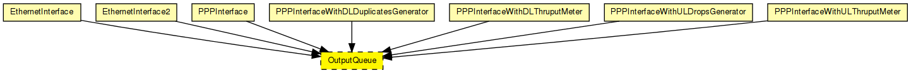
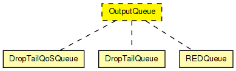

Prototype for per-NIC output queues. Concrete queues can implement drop-tail, RED etc. policy.
Interface to Layer 2 modules: The C++ class implementing the queue must implement (i.e. subclass from) IPassiveQueue, and should send a packet whenever the L2 module asks for one by calling the requestPacket() method.
See also: DropTailQueue, DropTailQoSQueue, REDQueue
The following diagram shows usage relationships between types. Unresolved types are missing from the diagram.
The following diagram shows inheritance relationships for this type. Unresolved types are missing from the diagram.
| Name | Type | Description |
|---|---|---|
| EthernetInterface | compound module |
Ethernet network interface. Complements EtherMAC and EtherEncap with an output queue for QoS and RED support. |
| EthernetInterface2 | compound module |
Ethernet network interface which supports full-duplex operation only. Complements EtherMAC2 and EtherEncap with an output queue for QoS and RED support. |
| PPPInterface | compound module |
PPP interface. Complements the PPP module with an output queue for QoS and RED support. |
| PPPInterfaceWithDLDuplicatesGenerator | compound module |
PPP interface. Complements the PPP module with an output queue for QoS and RED support. |
| PPPInterfaceWithDLThruputMeter | compound module |
PPP interface. Complements the PPP module with an output queue for QoS and RED support. |
| PPPInterfaceWithULDropsGenerator | compound module |
PPP interface. Complements the PPP module with an output queue for QoS and RED support. |
| PPPInterfaceWithULThruputMeter | compound module |
PPP interface. Complements the PPP module with an output queue for QoS and RED support. |
| Name | Value | Description |
|---|---|---|
| display | i=block/queue |
// // Prototype for per-NIC output queues. Concrete queues can implement // drop-tail, RED etc. policy. // // Interface to Layer 2 modules: The C++ class implementing the queue // must implement (i.e. subclass from) IPassiveQueue, and should // send a packet whenever the L2 module asks for one by calling the // requestPacket() method. // // @see DropTailQueue, DropTailQoSQueue, REDQueue // moduleinterface OutputQueue { parameters: @display("i=block/queue"); gates: input in; output out; }